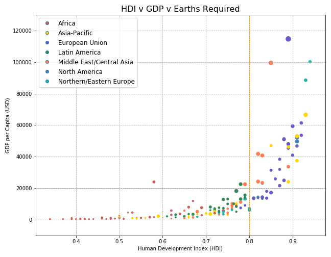
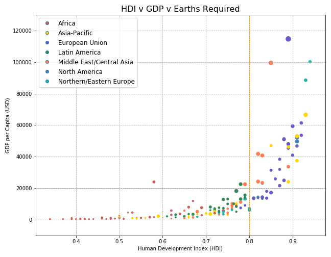

Our team looked at the overall impact of population and land use on the ecological footprint per region in a global data set. We found correlations from HDI and GDP to overall eco footprint as well.
If developed countries create a higher ecological footprint,
Then when HDI is 0.7 or higher, the ecological footprint would increase.
If level of development in a country has no effect on ecological footprint,
Then the ecological footprint would be random across countries.
 
